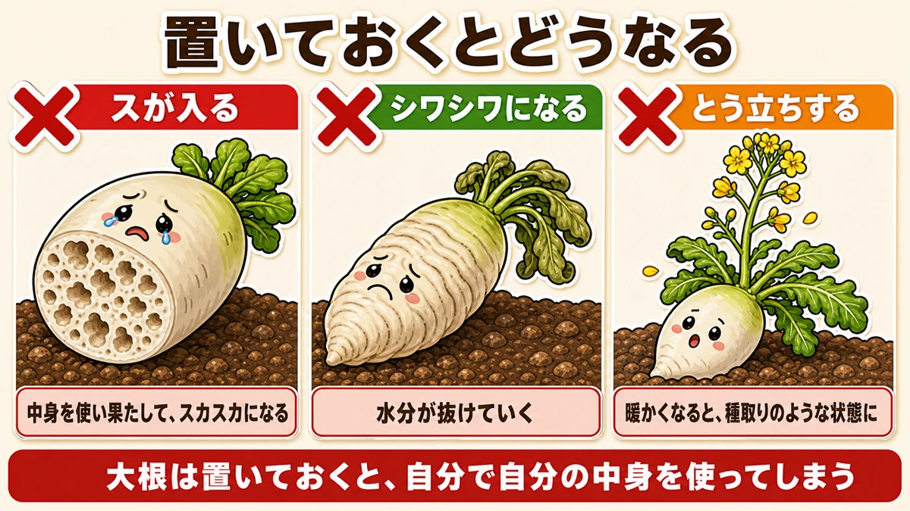
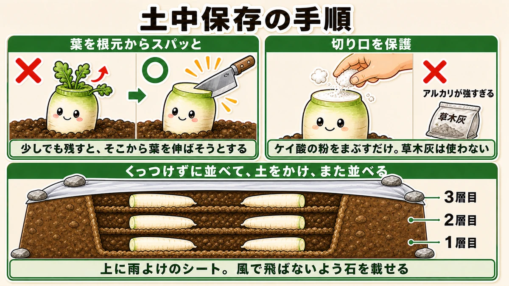
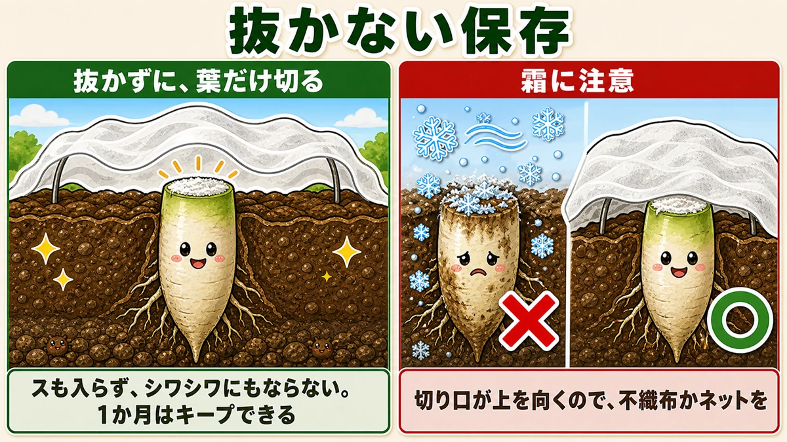
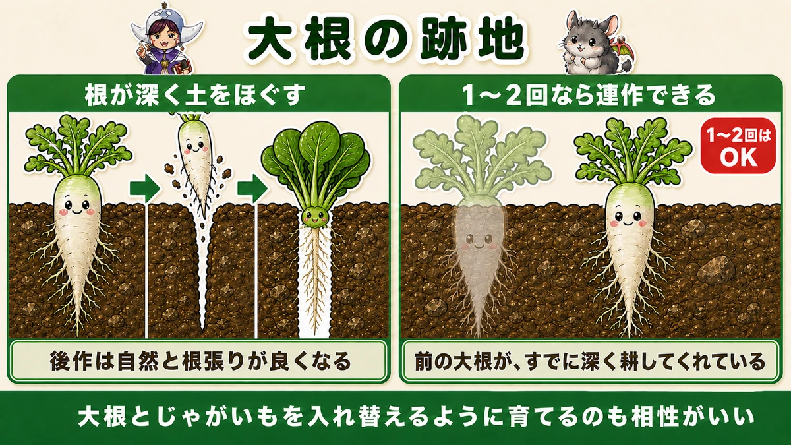

Store mooli by burying it 🔵 And cutting the leaves off flush is the whole trick

🗨️ "They all came ready at once and I can't eat them."
🗨️ "I left them in the ground and they went hollow."
🗨️ "Five mooli will not fit in my fridge."
Hello, I'm Eiko. Eight years of growing vegetables organically and without pesticides, and a teaching licence in science.
This one is about what happens after the harvest.
The point, up front:
You can store mooli by burying it. And cutting the leaves off flush at the crown is the whole trick.
We've been talking about when to pick. The real problem in a home garden arrives straight afterwards. Ten roots at once and three people to eat them, and a mooli takes up half a fridge.
So you use the garden as the fridge. An old method, and it needs almost no equipment ☺️
Left alone, a root eats itself

What this diagram says （図解の文字）
- What happens if you just leave it
- × it goes hollow — it uses up its own contents and becomes spongy
- × it wrinkles — the moisture leaves
- × it bolts — once it warms it goes over to seed
- Left in the ground, a mooli uses up its own insides
"I won't eat it yet, so I'll leave it in the ground." I did that too, at first. It doesn't work.
What actually happens
Left until the leaves die back, the root goes hollow — fine cavities form through the flesh and it turns spongy. Texture and flavour both go.
And the surface wrinkles, because moisture is leaving.
Once it warms up, it throws up a flower stem and effectively turns itself into a seed plant. At that point it isn't food.
So the framing is wrong
A mooli doesn't keep because it's in the ground. Left in the ground, it spends its own contents.
Which is why the job isn't "leaving it" — it's storing it.
Burying — the natural refrigerator

What this diagram says （図解の文字）
- How to store it in the ground
- Cut the leaves off flush at the crown — × ○ — leave any of it and the plant tries to grow leaves from there
- Protect the cut — × wood ash is too strongly alkaline — just dust it with silica powder; don't use wood ash
- Lay them out without touching, cover with soil, lay another layer — 1st / 2nd / 3rd layer
- Sheet over the top against rain, weighted with stones so it doesn't blow away
Step 1 — cut the leaves off flush
This is the part everything depends on.
The way a supermarket trims them is not enough. Bought roots have a little of the leaf base left on. That won't do.
Cut straight through at the crown, in one stroke. A sharp knife, no hesitation. If a stub is left, cut again.
Why be so strict about it? To leave no opening for new leaves.
If any of the leaf base survives, the root will try to push leaves from it — using the reserves stored in the root. It spends its own flesh.
Cut it off and the growing energy is sealed inside. You're closing the exit.
Step 2 — protect the cut
Don't bury it as it is. Bacteria get in through the cut surface — you'd be burying an open wound.
Use silica powder, the stuff sold for dusting cut seed potatoes. It works on mooli too. Just dust the cut face with it. It's a natural mineral that absorbs moisture and holds rot off.
Step 3 — bury them in layers
- Dig a hole the roots will fit in
- Lay them out so they aren't touching each other
- Cover with soil
- Lay another layer on top and cover again
Two or three layers. Bent roots and split roots are fine — this is where they go.
Step 4 — keep the rain off
Put a sheet over the top, weighted with stones.
That's it. A natural refrigerator, and the roots stay fresh in it for a long time.
Not lifting them at all — the easy version

What this diagram says （図解の文字）
- Storing without lifting them
- Don't pull them up — just cut the leaves off
- They don't go hollow and they don't wrinkle. A month is easy
- Watch the frost — × ○ — the cut faces upward, so lay fleece or netting over
If digging holes sounds like work, there's this. It doesn't keep as long as burying, and it takes no digging at all.
- Leave the roots in the ground and cut off only the leaves (flush, as above)
- Dust the cut with silica powder
- Pull the weeds around them
That's the whole method. No hollowing, no wrinkling, no spoiling — a month is comfortably achievable.
One caution
Frost damages them. Once the leaves are off, the cut face is pointing straight up at the sky. Lay fleece or netting loosely over them and that alone makes the difference.
Drying makes them sweet
What this diagram says （図解の文字）
- Dried mooli
- Split and dried — about a week of drying brings the sweetness out
- Can be done on a balcony ／ works with a bought root too ／ you don't need a garden
- This sweetness is why it's the basis of pickles
Another traditional method. Drying a mooli makes it sweet. That sweetness is exactly why it's the raw material for pickles.
And it works without a garden: split the root lengthways into strips and hang it somewhere with air moving, for about a week.
The entertaining part is that a shop-bought root does the same thing. You don't need a glut to try it — and the first time, the difference is genuinely surprising.
What follows a mooli grows well

What this diagram says （図解の文字）
- The ground after a mooli crop
- The roots go deep and loosen the soil ／ whatever follows roots more easily
- One or two repeats are fine — the previous crop has already dug deeply for you
- Alternating mooli and potatoes also works well
Mooli roots go deep and break the soil open. A thick root driving down leaves a vertical channel behind it, so the next crop roots better without you doing anything.
And you can repeat it once or twice
Which sounds wrong, given everything about rotation. The reason is the point above, turned round.
Growing mooli requires deeply worked soil — and the previous mooli has already done that work. So a light cultivation is enough to grow another. One or two repeats are genuinely fine.
If you've been leaving ground empty out of fear of replant problems, you can relax about this particular crop.
Other crops the garden will store
What this diagram says （図解の文字）
- The garden is the refrigerator
- Mooli — cut the leaves and bury it
- Chinese cabbage — tie it and leave it in the ground, into late winter
- Carrots — until early spring; the longer they stay, the sweeter they get
- Leeks — into late winter; take the biggest first
- The winter garden is itself a refrigerator: steady temperature, no drying, and dark
- Chinese cabbage — wrap the head in its own outer leaves and tie it with string. It will stand in the ground into late winter; cut one as you need it
- Carrots — draw soil over them as the cold sets in and they'll hold until early spring. Better still, continued cold makes them sweeter the longer they stay
- Leeks — pull the largest first, working down. Leaving them in the ground is the storage
Which comes to this
The winter garden is a refrigerator. The temperature is stable, the humidity holds, it's dark — and there's no electricity bill.
Not "harvest it and carry it all home", but "take what you need, when you need it." I think it's the most luxurious way there is to eat winter vegetables.
The science: why cutting the top stops the loss 🔬
Science lesson — and it makes "flush at the crown" click into place.
The part of a mooli you eat is almost all root (the green part at the very top is the hypocotyl, between root and stem). And a root is a storage organ.
The sugars and starch the leaves made by photosynthesis were carried down and stored there. That's what the white flesh is.
While the leaves live, the drawer is open
With leaves attached, the plant goes on trying to live, and to put out new leaves. And what it uses to do that is the reserve stored in the root.
It withdraws its own savings. "Going hollow" is what spending them all looks like.
Cutting the leaves off is locking the drawer. Close the exit and the contents stay.
Bolting is the same story
In warm weather the plant throws up a flower stem. That too runs entirely on the root's savings.
Which is why spring roots go hollow so readily — "flavour drops if you harvest late" is this, and nothing else.
From the plant's point of view, that white flesh is savings set aside for the next generation. We're intercepting them.
And why soil is good at storage
Think about what a refrigerator actually does:
- holds the temperature low and steady
- stops things drying out
- keeps it dark
Soil does all three. Below ground the temperature swings far less, soil holds moisture so nothing dries, and it is, obviously, completely dark.
The soil is running a refrigerator for free.
To sum up
- ✅ Left in the ground it spends its own contents and goes hollow — so store it, don't leave it
- ✅ Cut the leaves flush at the crown in one stroke. The supermarket trim isn't enough
- ✅ Dust the cut with silica powder. Don't use wood ash — too alkaline
- ✅ Bury in layers, roots not touching, with a weighted sheet on top
- ✅ The easy version: leave them in, cut the leaves, dust the cut, weed, and lay fleece against frost
- ✅ A week of drying makes them sweet — and works on shop-bought roots on a balcony
- ✅ The ground after mooli roots better, and one or two repeats are fine
- ✅ Chinese cabbage tied into late winter; carrots covered until early spring; leeks taken largest first
You don't have to do all of it. Next time you lift a mooli, take one, cut the top off flush, and put it straight back in the ground. Dig it up in a month and you'll see the difference 🔵
Thank you for reading!